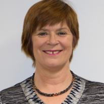
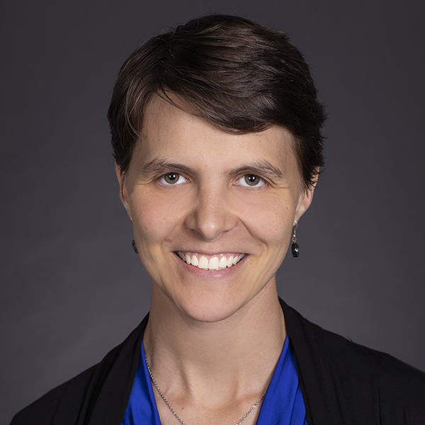
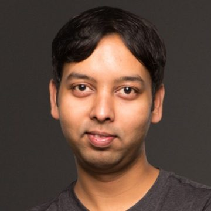
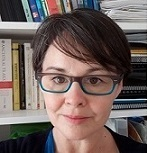

In the early months of 2020, the COVID-19 pandemic suddenly transformed the way the world works and collaborates. With all work-related travel abruptly curtailed and most professionals working from home, the daily work environment shifted to an ecosystem enabled by online communication and collaboration tools. In 2021, workflows continue to evolve for both universities and corporations - to better support R&D, education, and ideation. This panel will discuss how COVID-19-inspired innovation ecosystems have changed – for better or worse – university-company collaborations. Panelists will share personal observations, challenges, results, and ideas for the future.
Sheri A. Brodeur (Director of Corporate Relations), MIT, Cambridge, USA
Randy Katz (Vice-Chancellor for Research), UC Berkeley, USA
Xue (Steve) Liu (McGill University and VP R&D Samsung AI Center Montreal), Canada
Stefanie Molthagen-Schnöring (VP for Research & Transfer), HTW Berlin, Germany
Sheng-Ying (Aithne) Pao (NTHU), Hsinchu City, Taiwan
The aim of the workshop is to bring together researchers and practitioners to discuss the current state of Software Engineering (SE) research and Industrial Practice (IP), and advance collaboration to reduce the gap between research and practice.
Researchers can be unaware of real problems and constraints in practice, whereas practitioners may find themselves unable to adopt existing useful research. Practitioners are often reluctant or even prevented from sharing industry information due to confidentiality and legal constraints. Practitioners often feel that researchers work on dated or futuristic theoretical challenges which are divorced from today’s industrial practice. Researchers believe that practitioners are looking for quick fixes instead of using systematic methods. Practitioners have a view that case studies in research do not adequately represent the complexities of real projects and often dismiss results outright when students are used as test subjects in research. Researchers expect good work to take a few years to generate good publications which may affect a specific domain in an incremental manner. Practitioners expect a quick solution which must pay off in the short term. Researchers are more interested in proposing new techniques and tools. Practitioners would appreciate systematic evaluation and comparison of existing techniques and tools in real-world settings. Researchers and practitioners need to overlap research and practice to build trust in their partnership. This workshop is a platform to discuss and address such challenges.
Paper and talk proposal submission (Extended):
January 19, 2020 January 12, 2020
Special theme of SER&IP 2021 aims to explore the effect of COVID-19 on the SE community and specifically on industry-academia research collaborations.
SER&IP 2021 is soliciting regular and short papers as well as talk proposals. Regular papers should not exceed 8 pages, short papers should not exceed 4 pages and talk proposals should not exceed two-page extended abstract. Papers and abstracts must follow the ACM formatting instructions. Please submit the papers in PDF format on EasyChair.
Papers and talk proposals should be original and unpublished material describing innovative and mature research results, experience reports, case studies, challenges, problems and solutions, ongoing work, new ideas, new results and future trends. All submissions will be reviewed by three program committee members. The program committee will review all submissions for relevance, potential to trigger discussions at the workshop, lessons learned, quality of presentation, and novelty.
The accepted workshop papers, both regular and short, and two page extended abstracts will be published in the ICSE 2021 workshop proceedings in the ACM Digital Library. Authors of accepted papers and talks are required to register and present the paper at the workshop for the paper and or extended abstract to be included in the proceedings. The official publication date of the workshop proceedings is the date the proceedings are made available in the ACM Digital Library. This date may be up to two weeks prior to the first day of ICSE 2021. The official publication date affects the deadline for any patent filings related to published work.

Lero – the Science Foundation Ireland Research Centre for Software and Department of Computer Science and Information Systems, University of Limerick, Ireland
Abstract:
In nature we find examples of mutualistic relationships that have evolved together, where each symbiont makes use of each other in mutually beneficial way. One such relationship is that of the zebra and oxpecker – the oxpecker gets food by eating ticks and parasites that live on the zebra’s skin, thus providing the zebra with pest control. Even where organisms are different, there can be mutual benefits! Are academics and practitioners really so different that we cannot build mutualistic relationships? Or are we even the same species, where one group morphs into the other, in a bi-directional way. Students become practitioners, practitioners become students, academics move to industry, and practitioners come back to universities for further study. We have academics who are also practitioners, and practitioners who conduct research within their own organisations. In this talk, I will question the practitioner-academic divide that is so often spoken about, making the argument that it can be sorted by taking small steps rather than giant leaps. Within Lero, I have been working closely with industry for almost 20 years - a requirement of the funding agency, Science Foundation Ireland. In the early years, having an industry-based project was sufficient. Now, industry have to contribute 50% of individual project funding. As we move into our fourth round of Research Centre funding in 2021, we have has achieved mutualistic relationships with many companies. We know that industry is committed to our research! Illustrating from cases of industry-based research, I will discuss various ways by which academics and practitioners can work together to provide mutual benefits. While discussing the value of publications, I also consider practical on-site research undertaken with industry which our Lero research has shown to be successful. I will discuss initiatives such as workshops, action research, case studies, commercialization, and industry fellowships, showing how these have been successful both for industry at a software engineering and commercial level, and for academics, through significant research outputs. We have become zebras and oxpeckers, supporting each other through mutual research!
Biography:
Prof Ita Richardson is an Associate Professor with the Department of Computer Science and Information Systems at the University of Limerick, Co-Principal Investigator within Lero – the Irish Software Engineering Research Centre and a member of the Health Research Institute, University of Limerick. Her research focuses on Software Process and Software Quality, with a particular focus on Global Software Development, Connected Health, and Software Regulations for Healthcare. During her research career, Ita has had numerous industry research collaborations, most recently with Johnson and Johnson, Ocuco Ltd, Homesafe Care and IBM. She is an active member of the software engineering community, serving on many programme committees and editorial boards.

Microsoft Office of the Chief Economist, USA
Abstract:
When Microsoft sent everyone to work from home in March 2020, researchers across the company mobilized to study this huge, uncontrolled ‘experiment’. I will discuss the cross-company initiative to coordinate and learn from the wide variety of research projects studying how remote work has affected individuals, teams, and companies. The initiative consists of over 50 research projects, conducted by teams that span a range of disciplines (including engineering, research, marketing, human resources, and facilities) and divisions (including Microsoft Research, Office, Windows, Azure, Xbox, GitHub, and LinkedIn).
I will cover some of the over-arching findings around the challenges (and benefits) of work-from-home for collaboration, productivity, and mental well-being. I will then focus on a few studies that I worked on directly – particularly one using Outlook and Teams telemetry data for Microsoft employees, where we try to separate the causal effect of working-from-home from the simultaneous effects of the pandemic. For example, though meeting hours increased, they increased more for those who were already working from home pre-pandemic, suggesting that (in line with previous studies) an individual working from home can be conducive to more focused work, but lead to less collaboration.
Biography:
Sonia Jaffe is a Senior Research Economist in the Microsoft Office of the Chief Economist. She is one of the organizers of Microsoft's internal Future of Remote Work initiative. Her other research includes projects in health economics, matching theory, platform markets, and industrial organization. Prior to joining Microsoft in 2018, Sonia was a postdoc at the University of Chicago. She received her PhD from Harvard University in 2015.
Simula Research Laboratory, Norway

Microsoft Research, USA

The Open University, UK
IBM, Israel
Sintef, Norway
Simula, Norway
University of Skövde, Sweden
University of Stellenbosch, South Africa
Politecnico di Milano, Italy
Microsoft, USA
York University, Canada
MITANI Advanced Research Institute, Japan
Google, Switzerland
Sintef, Norway
The Open University, UK
Microsoft, US
SimulaMet, Norway
Compass, USA
University of Michigan-Dearborn, USA
Ericsson / Blekinge Institute of Technology, Sweden
Siemens Healthcare Pvt. Ltd, UK
Ocuco, Ireland
University of Castilla-La Mancha, Spain
University of Central Lancashire, UK